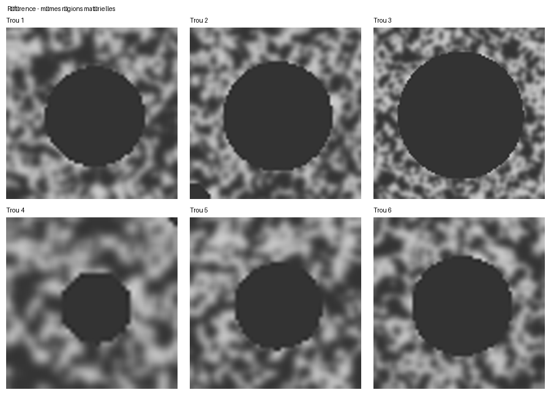
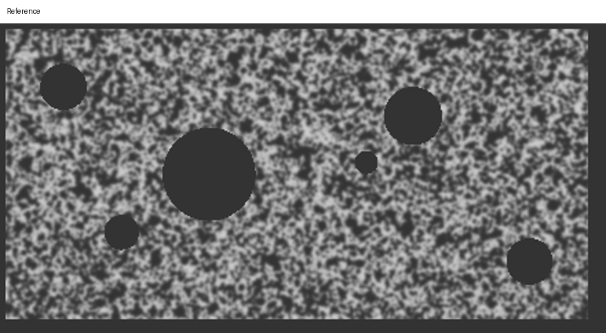

Nouveau : remapping, nouvelle identification et composition — images de chaque itération
Essai suivant : huit déplacements projetés par trou et nouvel ajustement RBF (résultat négatif)
Essai de développement, plaque 191. RBF signifie fonctions de base radiale. Les mêmes 3 163 fenêtres validées servent à tous les ajustements. Les affines des trous ajoutent des contraintes souples de position sur leur frontière et, selon la variante, de gradient au centre du vide. Aucun seuil ne borne l'amplitude du gradient.
Les trous affichés proviennent réellement du remapping de la cible : aucun cercle ni masque de référence n'est plaqué sur ces images. Le champ dans le vide est une extension géométrique, pas une mesure de matière. Aucun nouveau calcul de corrélation d'images numériques n'a été effectué.
Référence puis image remappée. Examiner aussi la texture au voisinage immédiat des trous.

Gaussiennes de largeur 16 pixels dans la plaque, complétées par des gaussiennes de largeur 4 pixels près des trous. La corrélation de la couronne utilise 1 ≤ r/r₀ < 1,25, avec r₀ rayon du disque de même aire. Le recouvrement est l'intersection divisée par l'union des six trous appariés ; il fait partie des données ajustées.
| Variante | Recouvrement trous | Corrélation matière | Corrélation couronne | Écart aux graines (px) | Déterminants ≤0 en matière |
|---|---|---|---|---|---|
| seeds_only | 88.0 % | 0.830 | 0.605 | 1.61 | 23 |
| hole_centres | 88.2 % | 0.830 | 0.606 | 1.61 | 22 |
| photo_affines | 32.5 % | 0.671 | 0.060 | 21.60 | 2020 |
| neighbour_affines_w0.1 | 94.9 % | 0.829 | 0.591 | 1.87 | 0 |
| neighbour_affines_w1 | 96.1 % | 0.823 | 0.476 | 2.22 | 0 |
| neighbour_affines_w10 | 96.7 % | 0.819 | 0.438 | 2.48 | 0 |
| neighbour_positions_only | 96.0 % | 0.823 | 0.477 | 2.20 | 0 |
| joint_angles_weak | 95.1 % | 0.830 | 0.622 | 1.82 | 0 |
Un recouvrement élevé ne démontre pas un bon transport du mouchetis. L'écart aux graines mesure l'effet du réajustement sur leurs déplacements ; ce n'est pas une erreur à une vérité analytique. Les résultats précédents restent intacts.

image1_ref · image1_def_cor — mêmes dimensions pour un défilement dans eog.
Convention : y = F x + t. La forme fournit cinq contraintes ; l'angle restant est estimé à partir du voisinage, puis éventuellement affiné par la photométrie du champ RBF. Ces matrices ne sont pas des mesures du gradient dans la matière de la couronne.
| Trou | Angle normalisé | F | t [px] |
|---|---|---|---|
| 1 | 4.5° | [[0.927 0.082] [0.75 7.682]] | [5.95, -173.05] |
| 2 | 1.5° | [[ 1.077 -0.05 ] [ 0.185 7.71 ]] | [-21.05, -258.41] |
| 3 | 1.5° | [[ 1.095 -0.029] [ 0.199 7.599]] | [-10.15, -347.61] |
| 4 | 4.0° | [[ 1.013 -0.027] [ 0.565 7.894]] | [-2.58, -461.05] |
| 5 | 6.0° | [[ 0.969 -0.159] [ 0.785 7.653]] | [30.05, -504.97] |
| 6 | -2.0° | [[ 0.918 0.188] [-0.106 7.684]] | [-7.3, -474.97] |
Matrices et centroïdes · Chiffres des variantes fixes · Affinement des angles et contrôle par trou
Toutes les variantes localisées, y compris les échecs · Gaussiennes de 16 pixels seules
Référence / RBF sans information des trous :
Référence / faible pondération des affines des trous :
Référence / pondération plus forte :